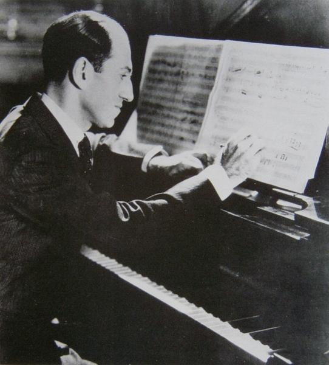

| Michael Ochs Archives | ||
| Back 06/28 |
 | Next 08/28 |
George Gershwin (1898-1937), polishes off Porgy & Bess. He wrote his first hit, Swanee, for Al Jolson, at 19, composed Rhapsody In Blue and numerous hits for Broadway and Hollywood - Shall We Dance?, I Got Rhythm, Summertime, It Ain't Necessarily So . . . |